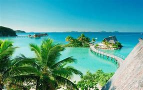
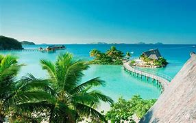

FIJI
Location
Fiji is an island country in the South Pacific Ocean, situated about 1,100 nautical miles northeast of New Zealand’s North Island.
History
Fiji’s history is shaped by a blend of indigenous Melanesian culture, Polynesian influence, and colonial legacy. The earliest inhabitants of Fiji were Austronesian and Melanesian people who settled around 3,500 years ago, forming complex societies with rich traditions. In the 17th century, European explorers discovered the islands, and by the 19th century, Fiji became a hub for traders, particularly in the sandalwood and beche-de-mer industries. Fiji became a British colony in 1874, which brought significant changes, including the arrival of indentured laborers from India to work in sugar plantations. Fiji gained independence in 1970 and has since developed a unique multicultural identity, with a blend of indigenous Fijian, Indian, and European influences.
Tourist Attraction
The number one tourist attraction in Fiji is the Mamanuca Islands, a picturesque archipelago of 20 islands known for their crystal-clear waters, coral reefs, and luxury resorts. Popular for snorkeling, diving, and beach relaxation, the Mamanuca Islands are a tropical paradise. Accessible from the main island of Viti Levu, these islands attract visitors with stunning beaches, vibrant marine life, and activities ranging from water sports to cultural experiences in local Fijian villages.
Fun Fact
A fun fact about Fiji is that it has its own traditional drink called kava (known locally as yaqona), made from the root of the kava plant. Kava is mildly sedative and is a central part of Fijian culture, used in ceremonies and social gatherings. The drink has a unique earthy flavor and is deeply rooted in Fijian customs and hospitality.

 

Fiji Flavours
Fijian cuisine is a delicious blend of traditional Polynesian, Melanesian, and Indian influences. Seafood plays a central role, with dishes like kokoda (raw fish marinated in coconut milk and lime) being a staple. Other popular foods include lovo, a feast of meats and root vegetables cooked in an underground oven, and roti, a nod to the Indian influence in Fiji. Coconut milk, fresh fruits, and root crops like taro and cassava are also key ingredients, creating flavors that are tropical, fresh, and unique to Fiji.
The Must Try Dish I Discovered in Fiji
KOKODA
Kokoda is a traditional Fijian dish made with fresh, raw fish such as mahi-mahi or snapper that is marinated in a combination of coconut milk and citrus juices such as lemons and limes. The coconut milk is added in order to balance out the acid. Fijian variety of ceviche is often garnished or combined with additional ingredients such as sea salt, minced chilis, finely sliced green onions, and coriander leaves.